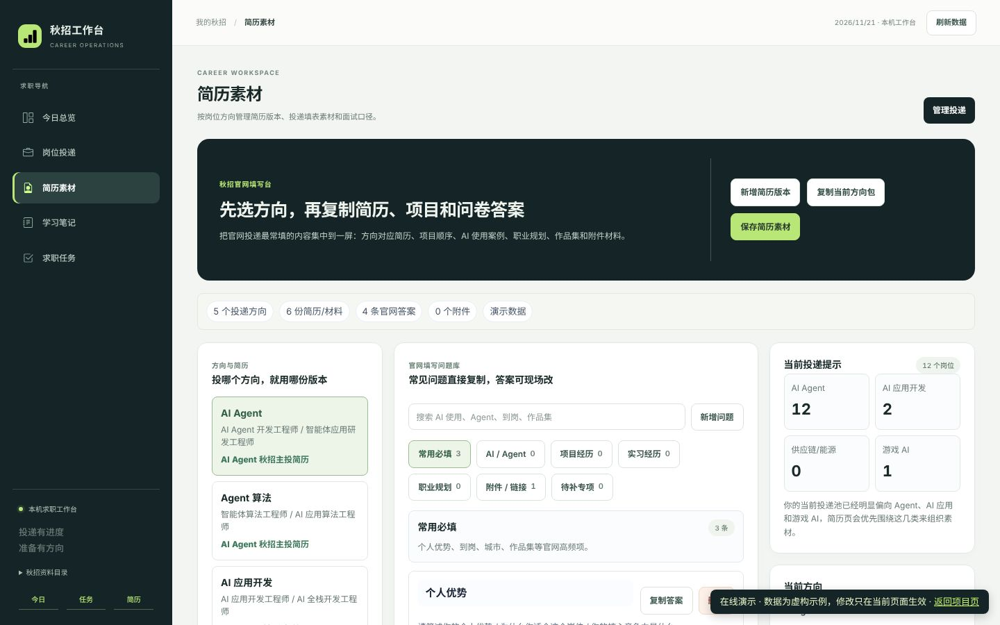

作品集 / 求职工作台
个人项目 · 科研与求职工作台（二）
求职工作台
本地运行的秋招工作台：岗位投递漏斗、简历素材、每日计划和 Obsidian 笔记检索放在同一个界面里。
FastAPI原生 JavaScript本地数据Obsidian 集成
在线演示用的是工作台的真实前端，后端换成浏览器内的示例数据，公司名称、投递记录和个人信息均为虚构，修改只在当前页面生效。
背景与问题
秋招期间需要同时跟进上百个岗位的状态、不同方向的简历版本、官网填表问题和学习笔记。信息散在表格、文件夹和笔记软件里，每次投递都要重复查找和填写。
整体流程
- 前端页面原生 JS，按视图渲染
- 本地 APIFastAPI 提供读写接口
- JSON 状态岗位、简历、任务、每日计划
- Obsidian 只读集成全文检索笔记，生成 obsidian:// 深链
我做了什么
- 用 FastAPI 设计十余个本地接口，按岗位、简历素材、每日计划、任务分别读写 JSON 状态文件。
- 岗位投递页：新增、筛选、状态流转和投递漏斗统计；简历页按方向管理简历版本和官网高频问题的答案，一键复制。
- 笔记页对 Obsidian 主库做只读全文检索（标题、正文、路径、标签），点击用深链在 Obsidian 中打开原文。
- 服务端对所有前端传入的文件路径做规范化和授权根目录检查，拒绝 .. 和符号链接越界。
关键设计与取舍
只读集成，不迁移笔记
做法工作台读取 Obsidian 原文件，修改仍在 Obsidian 里完成。
原因与代价迁移会产生两份来源和同步冲突；代价是依赖本地路径稳定，所以需要失效提示和索引重建。
原生 JavaScript，不引入框架
做法单页按视图渲染，状态集中在一个对象里。
原因与代价个人工具需求明确，少依赖、启动快、易部署；页面继续增长时，再拆分模块或迁移到框架。
界面截图



常见追问
怎么防止路径越权？
把允许访问的根目录作为边界，先规范化并解析真实路径，再检查目标是否位于授权根目录之下；前端传来的路径一律当作不可信输入。